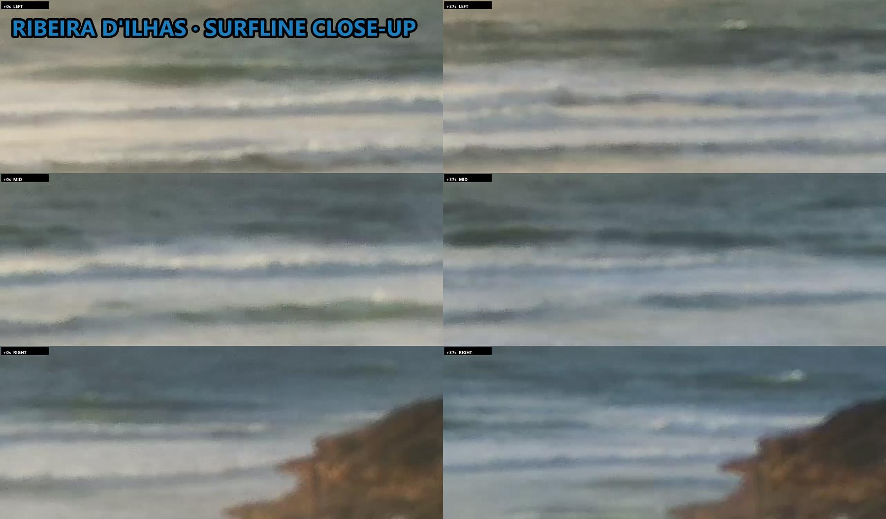
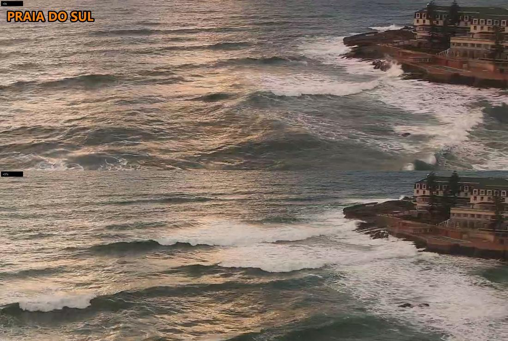
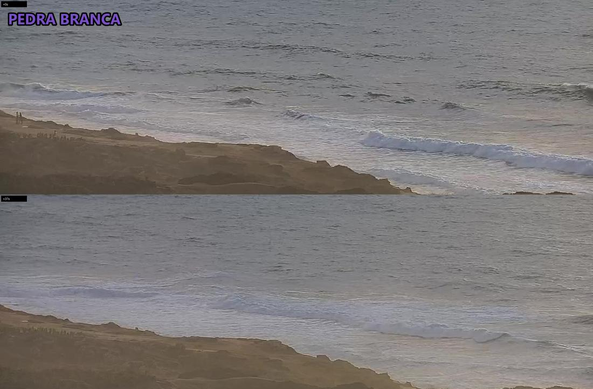
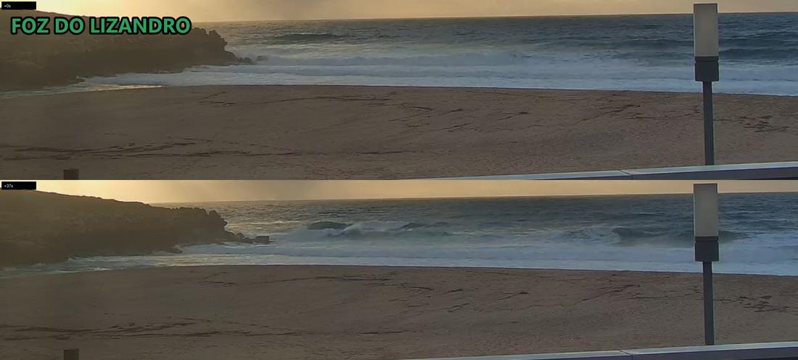

1.5–2.1m★💤 Skip
1.5–2.1m★💤 Skip
liveoffline
| Ribeira | ★ | 1.5-2.1m | onshore, lumpy mush | 0 | ||
|---|---|---|---|---|---|---|
| Norte | ★ | 1.8-2.4m | ||||
| Sul | ★ | 1.8-2.4m | chopped, wrapping on rocks | 0 | ||
| Pedra | ★ | 1.2-2m | wind-chop, closing white | 0 | ||
| Lizandro | ★ | 1.2-2m | closeouts on sand | 0 |
| Ribeira | ★ | 1.5-2.1m | |
|---|---|---|---|
| Norte | ★ | 1.8-2.4m | |
| Sul | ★ | 1.8-2.4m | |
| Pedra | ★ | 1.2-2m | |
| Lizandro | ★ | 1.2-2m |
| Ribeira | onshore, lumpy mush | 0 | |
|---|---|---|---|
| Sul | chopped, wrapping on rocks | 0 | |
| Pedra | wind-chop, closing white | 0 | |
| Lizandro | closeouts on sand | 0 |
Wave size & rating: surf-forecast.com Ribeira >>
1.5–2.1m★💤 Skip
1.5–2.1m★💤 Skip
1.5–2.1m★💤 Skip
1.5–2.1m★💤 Skip
1.5–2.1m★💤 Skip
1.5–2.1m★💤 Skip
1.8–2.4m★💤 Skip
1.8–2.4m★💤 Skip
1.8–2.4m★💤 Skip
1.8–2.4m★💤 Skip
1.8–2.4m★💤 Skip
1.8–2.4m★💤 Skip
1.2–2.0m★💤 Skip
1.2–2.0m★💤 Skip
1.2–2.0m★💤 Skip
1.2–2.0m★💤 Skip
1.2–2m★forecast💤 Skip
1.2–2.0m★💤 Skip
1.2–2.0m★💤 Skip
1.2–2.0m★💤 Skip
1.2–2.0m★💤 Skip
1.2–2.0m★💤 Skip
1.2–2.0m★💤 Skip
1.8–2.4m★forecast💤 Skip
1.2–2m★forecast💤 Skip
1.5–2.1m★💤 Skip
0 surfers
onshore lumpy mush across the point; close-up L0 M0 R0 / L0 M0 R0 -> 0 out

1.8–2.4m★💤 Skip
0 surfers
wind-chopped lines wrapping onto the rocks; detail crop readable; 0 out

1.2–2.0m★💤 Skip
0 surfers
wind-chop, small walls closing white on the inside; 2 walkers on the cliff; 0 out

1.2–2.0m★💤 Skip
0 surfers
onshore closeouts on the sand, beach empty; 0 out

| When | Ribeira | Norte | Sul | Pedra | Lizandro |
|---|---|---|---|---|---|
| 2026-11-13 16:41dusk | POOR0 | POOR— | POOR0 | POOR0 | POOR0 |
| 2026-11-13 15:41afternoon | POOR0 | POOR— | POOR0 | POOR0 | POOR0 |
| 2026-11-13 13:41lunch | POOR0 | POOR— | POOR0 | POOR0 | POOR0 |
| 2026-11-13 11:41morning | POOR0 | POOR— | POOR0 | POOR— | POOR0 |
| 2026-11-13 07:41sunrise | POOR0 | POOR— | POOR0 | POOR0 | POOR0 |
| 2026-11-12 16:41dusk | POOR— | VERY-POOR— | VERY-POOR2 | POOR0 | POOR0 |
| 2026-11-12 15:41sunset | POOR0 | VERY-POOR— | VERY-POOR0 | POOR0 | POOR0 |
| 2026-11-12 13:41afternoon | POOR0 | VERY-POOR— | VERY-POOR0 | POOR0 | POOR0 |